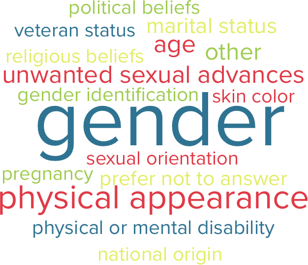

The Realities of Harassment
17%
experienced harassment in their workplace, just in the last 12 months
That's 1 in 6 people
If your first reaction is that only 17% of people having experienced harassment isn’t that big of a deal, think again. This figure is from the last 12 months only and when the majority of people are not experiencing harassment, it means that those who are feel more and more isolated and marginalized.
What form(s) of harassment have you experienced at work in the past 12 months?

What was your experience?
63%
did not report that they experienced harassment
42%
of those that reported, experienced retaliation
58%
did not feel their report was handled well